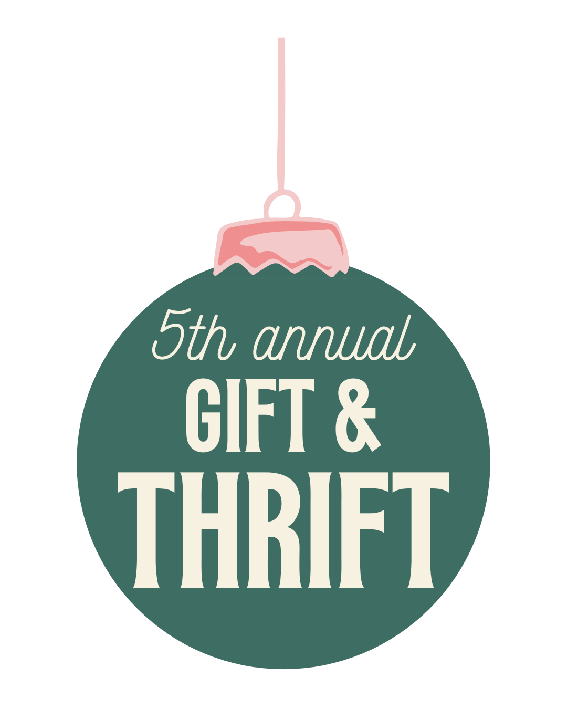

Projects
This page gives an overview of some of the projects I have worked on or am currently developing. They are connected to my studies, my interests, and my goal of becoming a sports commentator.
Personal Website
This website is one of my main projects. I built it as part of a school assignment using HTML and CSS, and I published it through GitHub Pages. The purpose of the site is to present who I am, my interests and my goals.
Through this project I learned the basics of web development, layout design, and how to structure information in a clear and simple way.
Ski World Championships 2025 – Trondheim
In February 2025, I had the opportunity to help cover the FIS Ski World Championships in Trondheim. This was one of the biggest sports events held in Norway in recent years, and being part of the media environment gave me valuable experience.
I assisted with gathering information, following events live, observing press workflows, and learning how large-scale sports journalism functions. This strengthened my interest in sports commentary and showed me how fast-paced real-time reporting can be.
UWRF Gift & Thrift – Event Support & Social Media
As part of one of my courses in the United States, I worked with my class to plan and execute the UWRF Gift & Thrift event. My main responsibility was managing the event's Facebook page and interacting with the community online.
I posted updates, answered questions from attendees, and helped maintain a clear and welcoming online presence. This gave me practical experience in digital communication, audience engagement, and event promotion.
During the event itself (December 9), I also served as the event photographer, taking pictures of families and children meeting Santa Claus. This role helped me practice photography and create a positive experience for visitors.
This project strengthened my skills in communication, teamwork and event coordination— all useful both in journalism and in future sports media work.
Future Plans
- Continue improving this website and adding more sections.
- Build a portfolio of journalism assignments.
- Look for opportunities to practice real sports commentary.